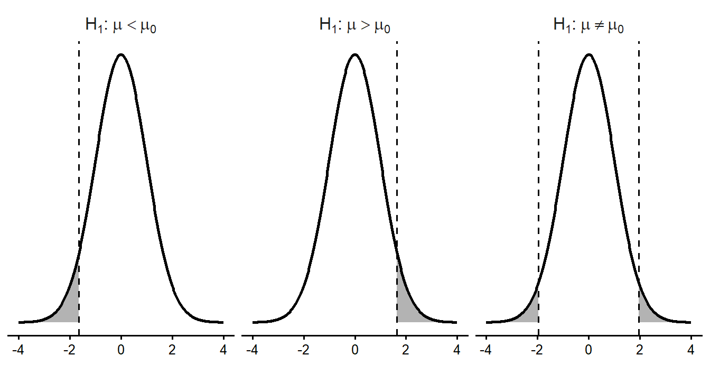
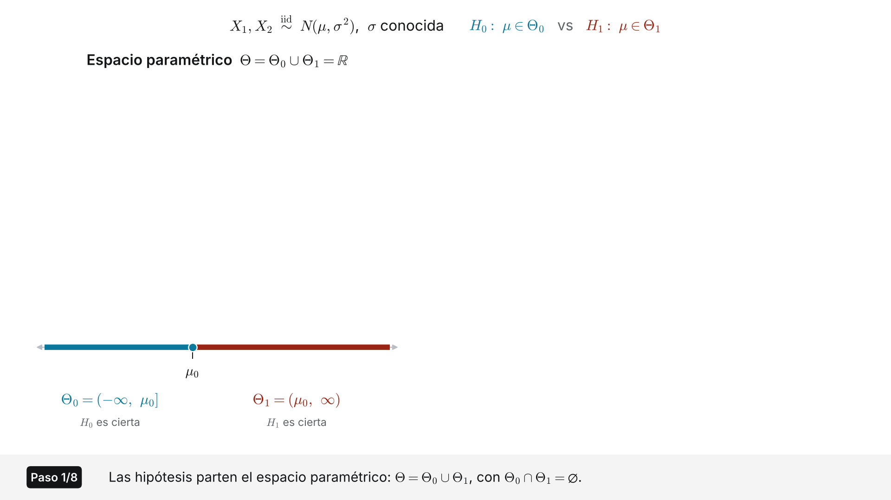
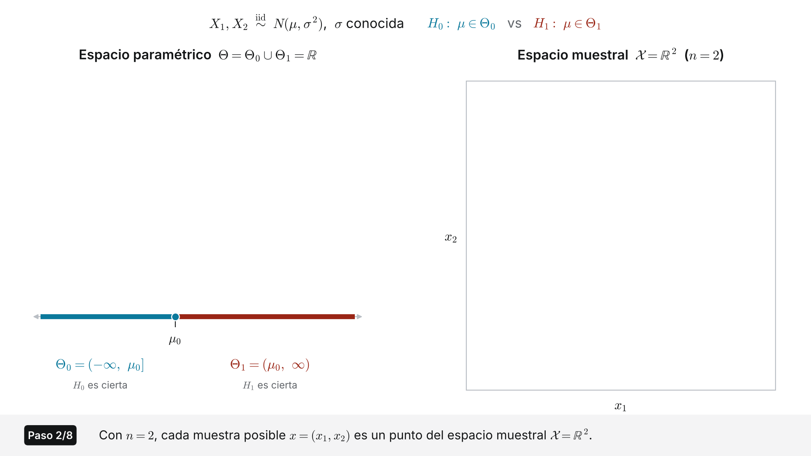
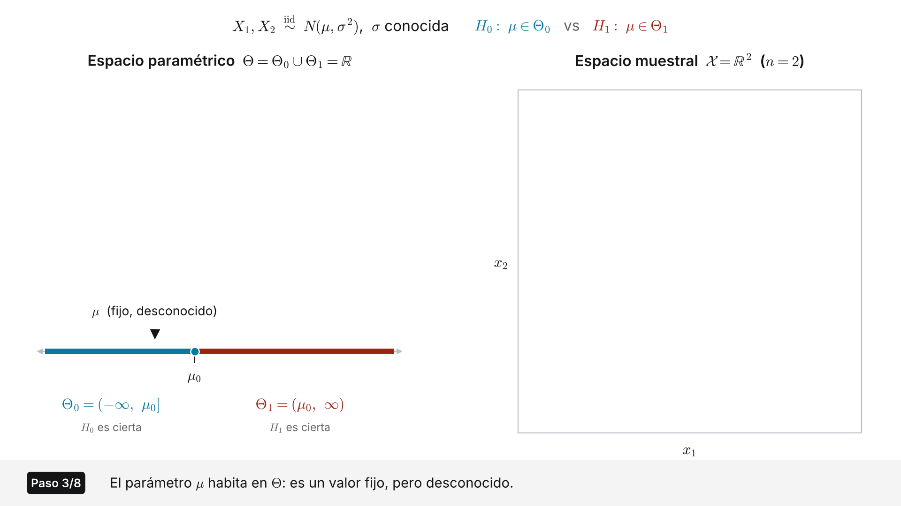
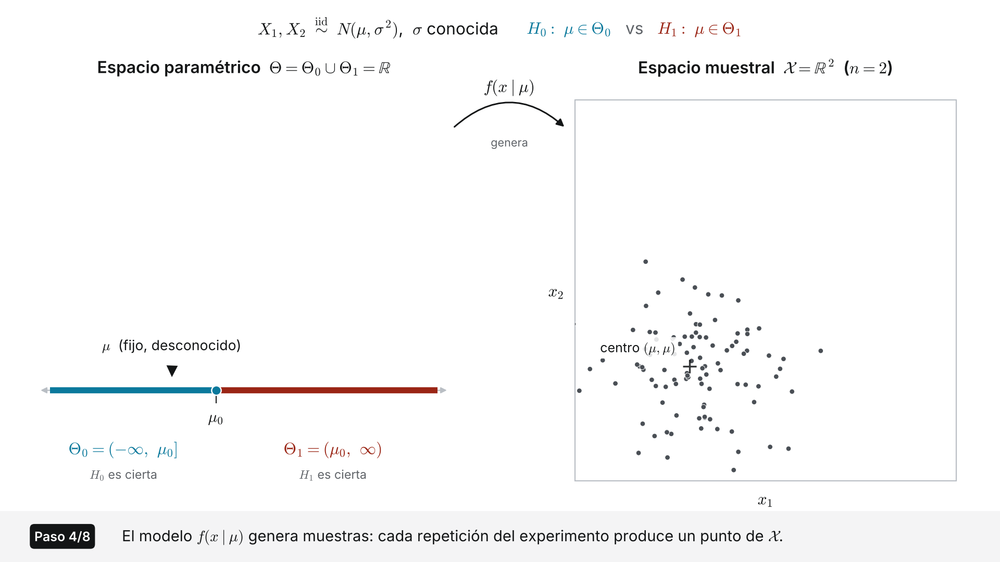
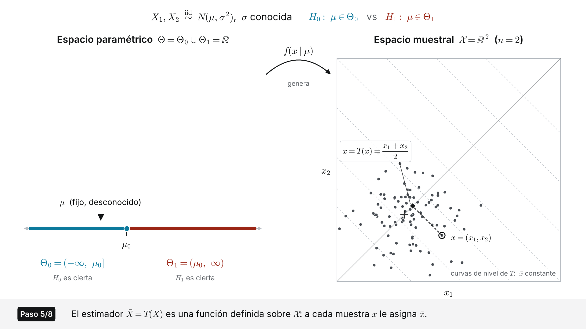
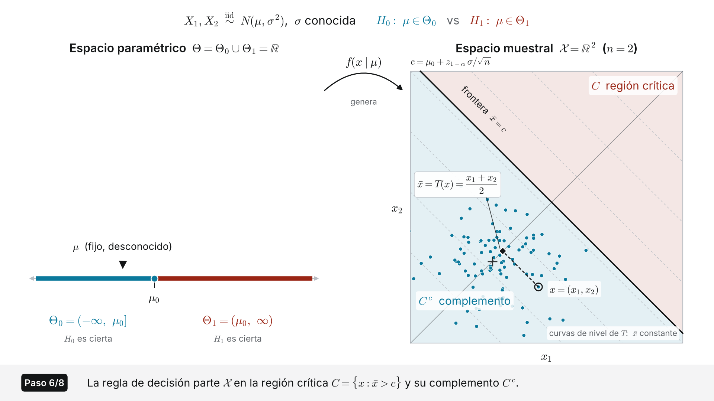
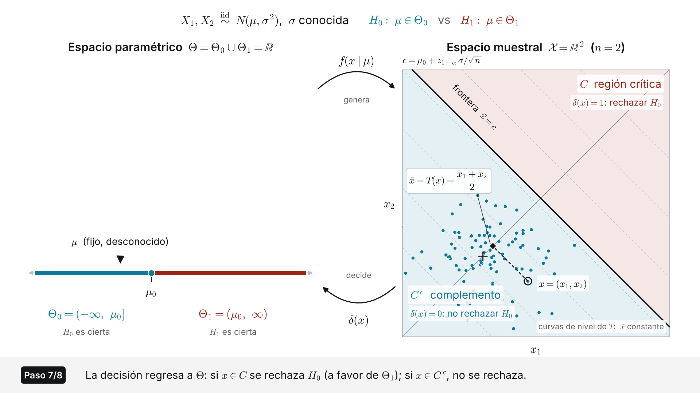
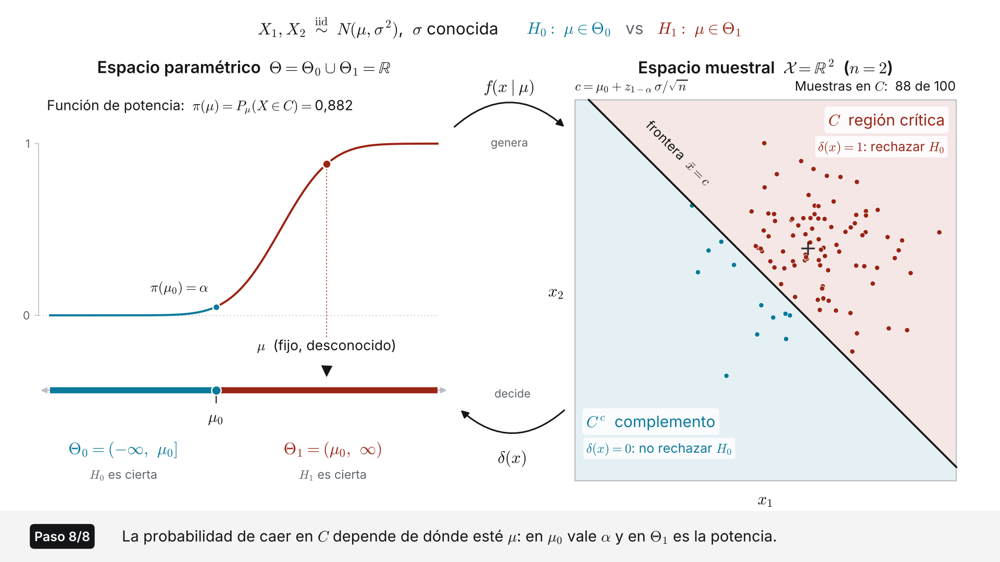

[XS-1130 Principios de Inferencia]
Definición
Una hipótesis estadística es una afirmación sobre el valor de un parámetro de la población, o sobre la distribución que sigue la población.
Es una afirmación sobre la población, nunca sobre la muestra. Decir que \(\bar x = 218.5\) no es una hipótesis: es un hecho observado. Decir que \(\mu = 220\) sí lo es, porque \(\mu\) no se conoce.
Ejemplos:
Importante
Estos ejemplos son afirmaciones sobre parámetros poblacionales desconocidos, lo que los convierte en hipótesis.
Hasta el momento se utilizó un estimador para acotar un parámetro mediante un intervalo de confianza y se reportó un rango de valores creíbles. Ahora vamos hacer algo distinto: partimos de un valor propuesto para el parámetro y se decide si los datos lo contradicen.
Estimación y contraste
| Estimación | Contraste | |
|---|---|---|
| Pregunta | ¿Cuáles valores puede tomar el parámetro? | ¿Es creíble este valor? |
| Punto de partida | Nada, solo la muestra | Un valor propuesto para el parámetro \(\theta_0\) |
| Resultado | Un intervalo | Una decisión |
| Riesgo que se controla | Nivel de confianza | Nivel de significancia |
Las dos son inferencia: ambas usan la distribución muestral del estimador para pasar de la muestra a la población.
Al final del procedimiento hay que escoger entre dos acciones, con información incompleta:
La verdad es desconocida y seguirá siéndolo. Lo único que se puede hacer es escoger una regla que mantenga controlada la frecuencia con la que esa regla se equivoca.
Importante
Un contraste de hipótesis no descubre la verdad: administra el riesgo de equivocarse. Por eso toda conclusión viene acompañada de un nivel de significancia, que es la tasa de error que se aceptó de antemano.
El razonamiento es el de una demostración por contradicción, pero en versión probabilística.
La asimetría del procedimiento
Encontrar un resultado compatible con \(H_0\) no prueba que \(H_0\) sea cierta: muchos otros valores del parámetro también serían compatibles con esa misma muestra. Por eso se dice no se rechaza y nunca se acepta.
Hipótesis nula
\(H_0\) es la afirmación de que el parámetro es igual a un valor concreto. Siempre lleva el signo de igualdad, porque es el valor que permite calcular la distribución del estadístico de prueba.
\[H_0: \mu = \mu_0 \qquad H_0: P = P_0\]
Hipótesis alternativa
\(H_1\) es la afirmación que se sostendría si los datos contradicen a \(H_0\). Nunca lleva el signo de igualdad y usa \(<\), \(>\) o \(\neq\).
\[H_1: \mu < \mu_0 \qquad H_1: \mu > \mu_0 \qquad H_1: \mu \neq \mu_0\]
El valor \(\mu_0\) es el mismo en las dos: lo que cambia es la dirección.
Tres preguntas, en este orden:
¿Cuál es el parámetro? Si el enunciado habla de promedios es \(\mu\); si habla de porcentajes, proporciones o conteos sobre un total, es \(P\); si habla de asociación entre dos variables categóricas, es independencia.
¿Cuál es el valor de referencia? Es el número que aparece en la afirmación previa, en la norma o en el estudio anterior.
¿Qué quiere demostrar quien investiga? Esa afirmación va en \(H_1\). Las expresiones a lo sumo, al menos, no supera y como mínimo marcan la dirección.
Importante
El valor de referencia nunca sale de la muestra. Plantear \(H_0: \mu = 218.5\) porque la muestra dio 218.5 vacía el procedimiento: el estadístico de prueba valdría cero por construcción.
Escriba \(H_0\) y \(H_1\) en cada caso.
\(H_0: \mu = 1200\) contra \(H_1: \mu < 1200\). Lo que la asociación quiere demostrar es que duran menos, y eso va en \(H_1\).
\(H_0: P = 0.5\) contra \(H_1: P > 0.5\).
\(H_0: \mu = 195\) contra \(H_1: \mu > 195\). A lo sumo 195 es la afirmación que se defiende, así que la contraria, que es lo que se busca refutar con evidencia, va en \(H_1\).
\(H_0: \mu = \mu_0\) contra \(H_1: \mu \neq \mu_0\). Se modificó no indica dirección, así que el contraste es bilateral.
\(H_0\): la región y el tipo de vivienda son independientes, contra \(H_1\): no lo son. Aquí la nula es siempre la independencia.
La forma de \(H_1\) determina dónde se ubica la región de rechazo.
Ejemplo:
Tres formas
| \(H_1\) | Nombre | Región de rechazo | Valor crítico |
|---|---|---|---|
| \(\mu < \mu_0\) | Unilateral izquierda | Una cola, la izquierda | \(-z_{1-\alpha}\) |
| \(\mu > \mu_0\) | Unilateral derecha | Una cola, la derecha | \(z_{1-\alpha}\) |
| \(\mu \neq \mu_0\) | Bilateral | Las dos colas, \(\alpha/2\) en cada una | \(\pm z_{1-\alpha/2}\) |
El área total de la región de rechazo siempre es \(\alpha\). En el caso bilateral esa área se reparte en partes iguales entre las dos colas, y por eso el valor crítico se busca con \(1-\alpha/2\).
Advertencia
El valor crítico depende de la distribución asociado al tipo de prueba (similar que los casos en el intervalo de confianza), a veces va a ser Normal, T-student, Chi-Cuadrado, etc.

En los tres casos el área sombreada suma 0.05.
Para resolver ahora
Escriba la hipótesis nula y la alternativa, e indique si el contraste es bilateral o unilateral.
Como la verdad es desconocida, toda decisión puede estar equivocada de dos maneras distintas.
Las cuatro situaciones posibles
| Decisión | \(H_0\) es verdadera | \(H_0\) es falsa |
|---|---|---|
| Rechazar \(H_0\) | Error tipo I (\(\alpha\)) | Decisión correcta (\(1-\beta\)) (Potencia) |
| No rechazar \(H_0\) | Decisión correcta (\(1-\alpha\)) | Error tipo II (\(\beta\)) |
\[\alpha = P(\text{rechazar } H_0 \mid H_0 \text{ verdadera}) \qquad \beta = P(\text{no rechazar } H_0 \mid H_0 \text{ falsa})\]
El error tipo I es el falso positivo: se declara un efecto que no existe.
El error tipo II es el falso negativo: existe un efecto y la prueba no lo detecta.
Importante
Con el tamaño de muestra fijo, \(\alpha\) y \(\beta\) se mueven en direcciones opuestas.
La única forma de bajar los dos a la vez es aumentar \(n\): con más información las dos distribuciones se vuelven más concentradas y se traslapan menos.
En la práctica \(\alpha\) se fija de antemano y no se escoge después de ver los datos. Si se eligiera \(\alpha\) al ver el resultado, el procedimiento dejaría de controlar nada.
Tamizaje de una enfermedad
\(H_0\): la persona está sana, contra \(H_1\): la persona está enferma.
Aprobación de un medicamento
\(H_0\): el medicamento nuevo no es mejor que el actual, contra \(H_1\): sí lo es.
La gravedad relativa no es un asunto estadístico sino del contexto, y es lo que debería guiar la elección de \(\alpha\).
Definición
El nivel de significancia \(\alpha\) es la probabilidad máxima que se está dispuesto a aceptar de cometer el error tipo I. Equivale al área de la región de rechazo.
Se fija antes de ver los datos. Los valores usuales son 0.10, 0.05 y 0.01, pero no tienen nada de sagrado: dependen del costo del falso positivo en el problema concreto.
Interpretación frecuentista: si \(H_0\) fuera verdadera y el estudio se repitiera muchas veces (mismo diseño y tamaño de muestra), la proporción de repeticiones en que la prueba rechazaría \(H_0\), cometiendo un error tipo I, se aproximaría a \(\alpha\).
Importante
\(\alpha\) no es la probabilidad de que \(H_0\) sea falsa. \(H_0\) es verdadera o falsa, no tiene una probabilidad asociada. \(\alpha\) es una propiedad del procedimiento, no de la hipótesis.
Definición
El estadístico de prueba mide a cuántos errores estándar se encuentra la estimación muestral del valor propuesto en \(H_0\).
\[\text{estadístico} = \frac{\text{estimador} - \text{valor propuesto}}{\text{error estándar del estimador}}\]
Bajo el supuesto de que \(H_0\) es verdadera, ese cociente sigue una distribución conocida: normal estándar, \(t\) de Student o ji-cuadrado, según el caso.
Toda la información de la muestra entra al procedimiento por este estadístico.
Nota
No siempre el estadístico de prueba tiene exactamente esa forma.
Definición
El valor p es la probabilidad de obtener un estadístico de prueba al menos tan extremo como el observado, suponiendo que \(H_0\) es verdadera.
\[\text{Unilateral derecha: } p = P(Z \ge z_c) \qquad \text{Unilateral izquierda: } p = P(Z \le z_c)\]
\[\text{Bilateral: } p = 2\,P(Z \ge |z_c|)\]
Un valor p pequeño significa que, si \(H_0\) fuera cierta, una muestra como la observada sería rara. Eso es evidencia contra \(H_0\).
Importante
No siempre es una \(Z\) (Normal Estándar), depende de los casos. A veces usaremos t-student, Chi, F de Fisher, etc.
Hay tres criterios equivalentes. Siempre conducen a la misma decisión.
Criterio 1: valor crítico
Se rechaza \(H_0\) si el estadístico calculado cae en la región de rechazo, es decir si supera al valor crítico en la dirección de \(H_1\).
Criterio 2: valor p
Se rechaza \(H_0\) si \(p < \alpha\). No se rechaza si \(p \ge \alpha\).
Criterio 3: intervalo de confianza
En un contraste bilateral, se rechaza \(H_0: \theta = \theta_0\) al nivel \(\alpha\) si el intervalo de confianza del \(100(1-\alpha)\%\) no contiene a \(\theta_0\).
Una conclusión completa tiene cuatro piezas:
Dos plantillas
Si se rechaza: con un nivel de significancia del 5% hay suficiente evidencia estadística para rechazar la hipótesis nula de que el contenido promedio es de 600 mg; se concluye que el contenido promedio es mayor.
Si no se rechaza: con un nivel de significancia del 5% no hay suficiente evidencia estadística para rechazar la hipótesis nula de que el contenido promedio es de 600 mg.
Nunca se escribe se acepta \(H_0\), ni se concluye que \(H_0\) es verdadera.
Importante
Significativo en estadística quiere decir difícil de explicar por azar muestral. No quiere decir grande, ni relevante, ni importante.
En la práctica puede ser que una diferencia de 1 cm sea estadísticamente significativa, pero a nivel práctico 1 cm en la altura de un árbol no sea relevante para el experto.
La significancia estadística tiene que ver con los datos y la prueba de hipótesis propiamente.
La significancia relevante se asocia con la diferencia mínima que termina siendo práctica para el contexto del experto.
Una envasadora declara 500 g por paquete. Con \(\sigma = 20\) g conocida se toma una muestra de 10 000 paquetes y se obtiene \(\bar x = 500.6\) g. Contraste al 5% si el contenido promedio difiere de 500 g.
Idea:
Hipótesis: \(H_0: \mu = 500\) contra \(H_1: \mu \neq 500\)
Suponga que se rechaza \(H_0\)
Como se rechaza hay suficiente evidencia estadística para rechazar \(H_0\) (Hay diferencia significativa).
Pero \(500.6-500=0.06\) g. puede que no represente una diferencia relevante para la envasadora.
Definición
La potencia es la probabilidad de rechazar \(H_0\) cuando \(H_0\) es efectivamente falsa.
\[\text{Potencia} = 1 - \beta = P(\text{rechazar } H_0 \mid H_0 \text{ falsa})\]
Es la capacidad de la prueba para detectar un efecto que sí existe. Una prueba con potencia baja no sirve de mucho: si no rechaza, no se sabe si es porque no hay efecto o porque la prueba no podía verlo.
La potencia aumenta cuando:








Para cada enunciado escriba la hipótesis nula y la alternativa, indique cuál es el parámetro de interés y diga si el contraste es unilateral izquierdo, unilateral derecho o bilateral.
En cada caso indique en cuál cola o colas queda la región de rechazo, cuánta área le corresponde a cada una y cuál es el valor crítico, suponiendo que el estadístico se distribuye normal estándar. Puede apoyarse en qnorm.
Para cada situación, describa en términos del problema qué significa cometer el error tipo I y qué significa cometer el error tipo II, indique la consecuencia de cada uno, diga cuál le parece más grave y qué nivel de significancia escogería, justificando.
En cada situación se describe lo que ocurrió. Indique si se cometió un error tipo I, un error tipo II, o si la decisión fue correcta. Justifique en una línea identificando primero cuál era \(H_0\).
Complete el cuadro indicando si cada cantidad aumenta, disminuye o no cambia. Justifique cada fila en una línea.
| Cambio | \(\alpha\) | \(\beta\) | Potencia |
|---|---|---|---|
| Aumenta \(n\), todo lo demás fijo | |||
| Se baja \(\alpha\) de 0.05 a 0.01, con \(n\) fijo | |||
| El verdadero valor del parámetro se aleja más de \(H_0\) | |||
| La población es más variable, es decir \(\sigma\) mayor |
Un ministerio evaluó una reforma educativa comparando el puntaje promedio de una prueba nacional antes y después. Con 50 000 estudiantes evaluados, el promedio pasó de 70.0 a 70.4 puntos en una escala de 0 a 100, y el informe reporta un valor p menor a 0.001. El titular del comunicado de prensa dice: la reforma mejoró significativamente el rendimiento de los estudiantes.
Cada una de las siguientes frases apareció en un informe. Todas tienen al menos un error. Identifique el error y reescriba la frase de forma correcta.
Marque con equis la única opción correcta en cada caso.
Indique si cada afirmación es falsa o verdadera y justifique su respuesta en una línea.
Primera parte. Complete cada enunciado con el concepto que corresponde.
Segunda parte. Responda de forma breve.